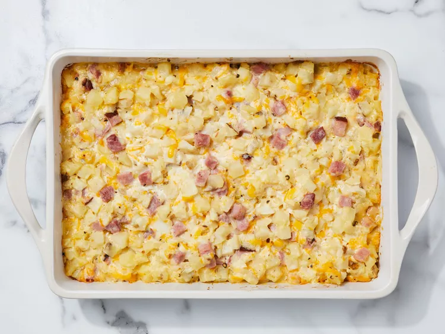

Lasagna

Simple Macaroni and Cheese
An easy ham, cheese, and potato casserole.
I have been told by several people that this could
possibly be the best thing they ever tasted.
Cheese, ham, and hash browns make this a dish even
your pickiest eater will like. A delicious recipe your
kids will beg you to make!
Ingredients
- 1 package frozen hash brown potatoes
- 1 package pre-cooked ham steak diced
- 2 cups shredded sharp cheddar cheese
- 1 onion chopped
- 1 can condensed cream of chicken soup
- 1 container sour cream
- salt and ground black pepper to taste
Steps
- Gather the ingredients.
- Preheat the oven to 350 degrees F (175 degrees C).
Grease a 9x13-inch baking dish.
- Stir hash browns, ham, cheese, onion, condensed soup, sour
cream, and butter in a large bowl; season with salt and pepper.
- Transfer mixture to the prepared baking dish and cover with aluminum foil.
- Bake until bubbly and cheese is melted, 45 minutes
to 1 hour. Remove foil and continue baking until brown, about 15 minutes more.
- Serve hot and enjoy!